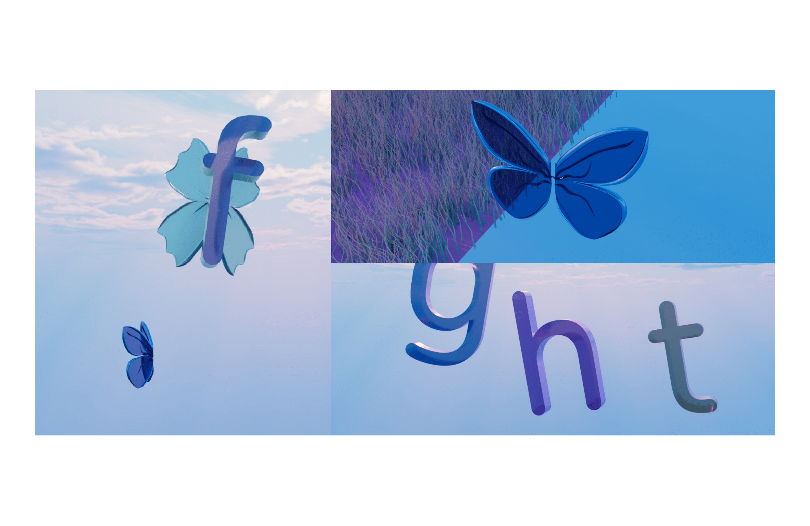
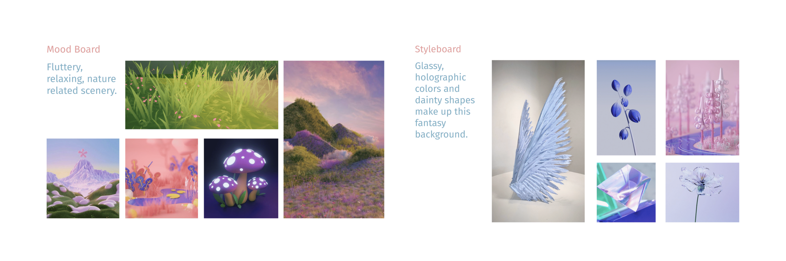
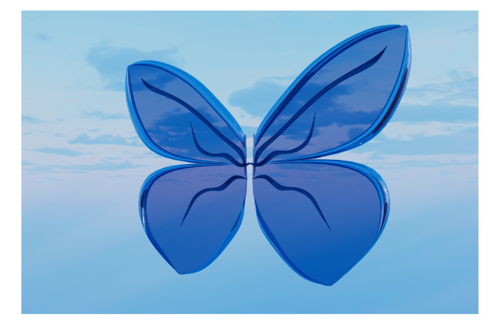
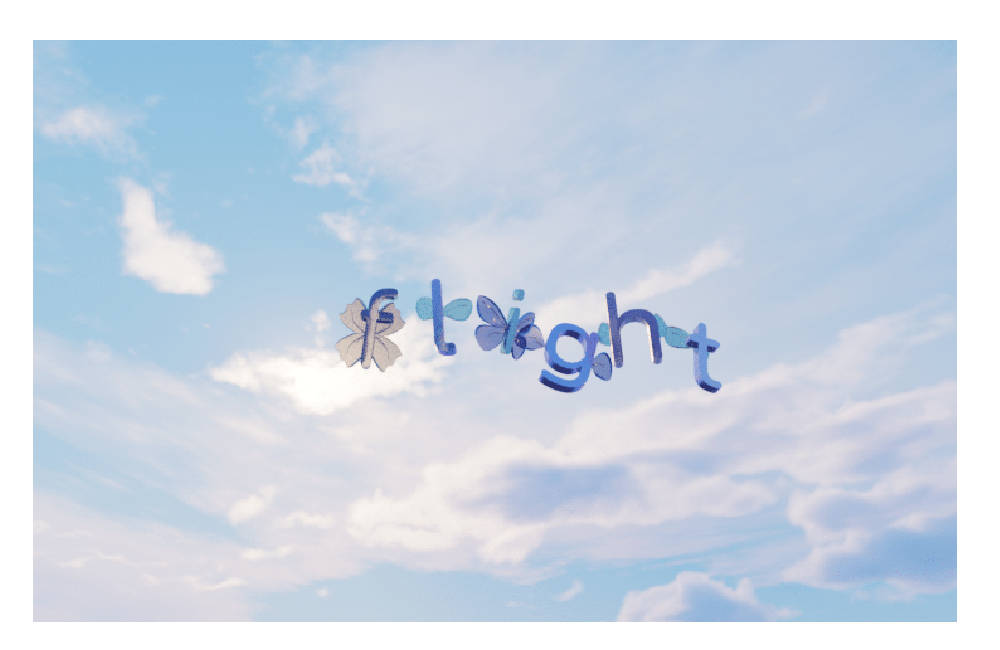

Flight: A Short 3D Film

Project Title: "Flight Experimentation"
Software Used: Cinema 4D, AfterEffects
I produced a seamless and captivating short animation that visualizes the letter 'I' as a creature, which then interacts with its environment to spell out 'FLIGHT'. I tried to aim for a whimsical yet sophisticated visual palette, characterized by its colorful, glassy textures that catch the light and the detailed, realistic grass that grounds the scene in an almost magical realism.
I demonstrated expertise in utilizing Cinema 4D's tools for 3D modeling, texturing, lighting, and animation. The project showcases the ability to create animations that are both visually stunning and narratively engaging. The project aims to captivate viewers with its unique concept and execution, inviting them into a world where typography and nature merge in an unexpected dance of color and motion.
This was a personal project to me because I felt like I had transformed in college and wanted to portray that in whimsical manner while also experimenting with texture and 3D. I chose the word "flight" and had the word come to completion after the letter "I" flies up to it. My favorite part of this project was playing with camera angles.
Initially I wanted my letters to be organic and super stylized as shown above.
However when I built my scene out to a point where I was happy, the curves of the letter I designed didn't quite fit the scene well so I designed the letters to have some structure. I think that organic lines and freedom don't have to necessarily be associated with each other all the time. The structure of the letters fit to me because it gives the butterfly a different kind of character.
The letters and wings still managed to fit my style board with glassy and smooth textures with pastel colors.
I designed several types of wings, and made designs inside of them. Looking at the wing, you can also see the inside shapes.
I was very happy with how my word turned out because it matches my initial letters very well.